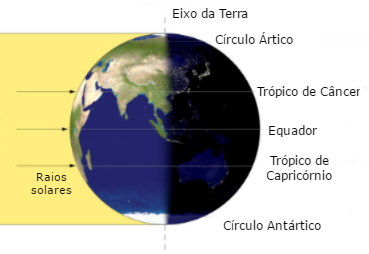

Sobre a página
Essa página foi desenvolvolvida como exercício de estudo sobre html na disciplina de ITM (Introdução à multimídia), com o intuito trazer informações sobre o Equinócio.
Essa página foi desenvolvolvida como exercício de estudo sobre html na disciplina de ITM (Introdução à multimídia), com o intuito trazer informações sobre o Equinócio.
O Equinócio é um fenômeno astronômico que ocorre duas vezes ao ano e marca o ínicio de duas das quatro estações: a primavera e o outono.
Ele acontece quando o sol cruza o a linha celeste do Equador, fazendo com que os hemisférios Sul e Norte recebam a mesma quantidade de luz (nesses dias a duração do dia e da noite são quase as mesmas, 12 horas). A diferença na distribuição dos raios solares sobre os hemisférios é consequência de uma inclinção do eixo de rotação do Planeta. Veja a imagem abaixo:
O Equinócio pode ser confundido com outro fenômeno parecido, o Solstício. Ambos os fenômenos acontecem duas vezes por ano e são relacionados com a inclinação da Terra, porém os solstícios marcam o início do verão e do inverno. Nesses dias a duração da noite pode ser 14 horas e o dia de 10 horas, ou vice-versa dependendo da estação do hemisfério em que é observado.
O Equinócio ocorre em dois dias do ano: dia 20 de março, com o ínicio da primavera no Hemisfério Norte e do outono no Hemisfério Sul; e no dia 23 de setembro, com ínicio do outono no Hemisfério Norte e da primavera no Hemisfério Sul. Veja a tabela abaixo:
| Dia | Estação | Hemisfério |
|---|---|---|
| 20 de março | primavera | Norte |
| 20 de março | outono | Sul |
| 23 de setembro | outono | Norte |
| 23 de setembro | primavera | Sul |